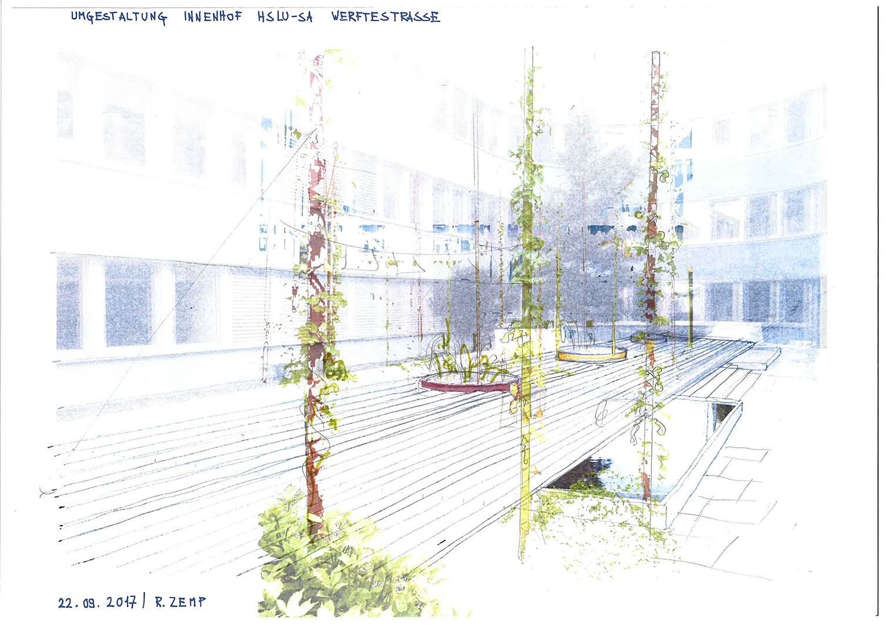
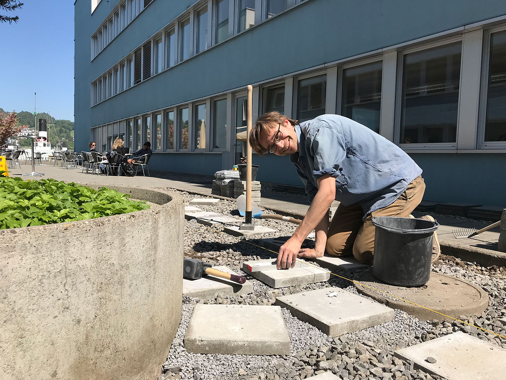

(Foto: Lars Schuchert)
INNENHOF
2018
Luzern
Schweiz
Team:
Richard Zemp
Lars Schuchert
Studierende der HSLU - Soziale Arbeit
Hausdienst HSLU - Soziale Arbeit
Auftraggeberinnen:
Hochschule Luzern - Soziale Arbeit
Verein für Studierende der Sozialen Arbeit
Umgestaltung Innenhof Hochschule Luzern - Soziale Arbeit
Auf Initiative der Studierenden wurde der bestehende Innenhof der Hochschule Luzern – Soziale Arbeit mit kleinsten Eingriffen umgestaltet. Die bestehende streng geometrische Gestaltung wird durch ein längs gerichtetes Holzdeck überlagert, Rankpfähle mit Hopfen zonieren den Raum und schaffen zusammen mit den neu bemalten Pflanztrögen eine anregende Atmosphäre. Planung und Ausführung gingen Hand in Hand und fanden vor Ort in Zusammenarbeit mit Studierenden und dem Hausdienst statt.

Ausgangssituation. (Foto: Lars Schuchert)

Ideenskizze. (Richard Zemp)

Umsetzung vor Ort. (Foto: Lars Schuchert)